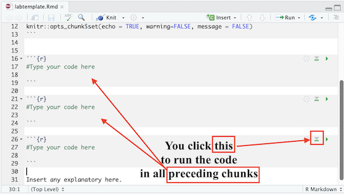
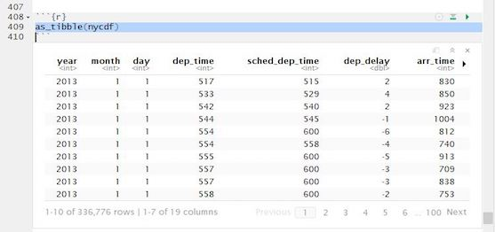
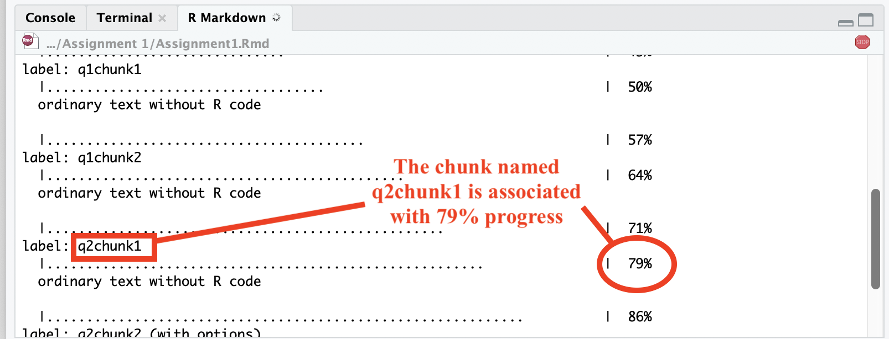
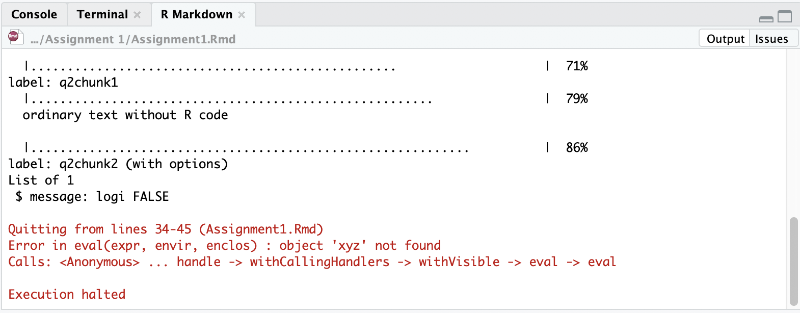
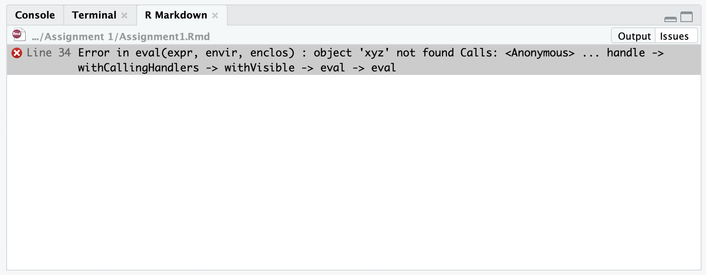

R Scripts
Running R code using the console (bottom left in figure below) is a
great place to start, but has its limitations. Each time you want to
execute a set of commands, you have to re-enter them at the command
line. Complex commands are potentially subject to typographical errors,
necessitating that they be re-entered correctly. Repeating a set of
operations requires re-entering the code stream. To give yourself more
room to work, it’s a great idea to use the R script editor.
A script is simply a text file containing a set of commands and
comments. The script can be saved and used later to re-execute the saved
commands. The script can also be edited so you can execute a modified
version of the commands.
You can open a new empty script by clicking the New File icon in the
upper left of the main RStudio toolbar. This icon looks like a white
square with a white plus sign in a green circle. Clicking the icon opens
the New File Menu. Click the “R Script” option and the script editor
will open with an empty script. Your R Studio should look similar to
below (image source: R for Data
Science)

RStudio
R Scripts are basically text files with a .R extension that houses
your code and comments. You write your code. Execute that code from your
R script. Results are produced in your R console window. In this class,
we won’t be using regular R Scripts for homework assignments. Instead,
we’ll be using R
Markdown.
R Markdown documents take script files to a new level by allowing you
to mix R commands with explanatory text. Think of an R Markdown document
as an R script on steroids. Your R Markdown source document is compiled
into an output report evaluating the R commands in the source document
to produce easily reproducible results in an aesthetically pleasing
form. It combines code, results from the code, and narrative text
explaining the results to produce beautiful documents and academic
reports.
Still not convinced that R Markdown is useful? Check out Nikhil
Kaza’s thorough description of why
we should use R Markdown.
R Markdown
R Markdown is a simple formatting syntax for authoring html, pdf, and
Microsoft Word documents in RStudio. For each R related assignment, you
will upload onto Canvas two documents:
- An R Markdown document, which has an .Rmd extension
- A knitted
.html, .pdf or
.docx file
These documents will provide us an easy-to-read document to grade;
more importantly, you will get to practice (1) writing scripts, (2)
keeping track of the analyses you run, and (3) organizing your output in
a reader-friendly manner. When you submit these documents on Canvas,
do not combine them into a zipped compressed folder.
They should be two separate files.
To be clear, R is a programming language. RStudio is an application.
R Markdown is a markup syntax to convert R script and text into a pdf or
html document. It allows for presentation-ready documents that show
commands and results in a seamless flow. When you write R code and embed
it in presentation documents created using R Markdown, you are forced to
explicitly state the steps you took to do your research.
In RStudio, install the packages knitr and
rmarkdown using the install.packages()
command. Type the following in your RConsole window after
>
install.packages("knitr")
##
## The downloaded binary packages are in
## /var/folders/hs/zvzkdz_12yj_drz4g6sm8h_00000gq/T//RtmpqfX9MV/downloaded_packages
install.packages("rmarkdown")
##
## The downloaded binary packages are in
## /var/folders/hs/zvzkdz_12yj_drz4g6sm8h_00000gq/T//RtmpqfX9MV/downloaded_packages
Once you’ve installed these packages, you don’t need to install them
any more in the future. You also do not need to load them in at any time
using library().
Creating and saving an R Markdown
To create a new .Rmd file in RStudio, select File ->
New File -> R Markdown. A window should pop up. Type in “Assignment
1” next to Title and your name next to Author. Leave
everything else alone and click OK. A new window in the top left of your
RStudio console should pop up containing your new R Markdown file.
If you are using your personal computer for this guide, it’s best to
set up a clean and efficient file management structure. File management
is key to preventing R programming frustration. Here are some tips.
-Set up a clear and understandable hierarchical file system for this
class on your hard drive. For example, create a class folder (SPH 215).
Within this class folder, create the folder Assignments. Within the
Assignments folder, create separate folders for each Assignment
(e.g. Assignment 1, Assignment 2, …). Don’t work from your Desktop. Or
from the Downloads folder. Or some randomly named folder that you will
have a hard time finding a month, week or day from now. -Keep all your
files that are related to a lab or assignment in one folder. That is,
don’t have an Assignment 3 folder that contains data files specific to
Assignment 1. Keep everything in one folder, including the R Markdown
for that assignment or lab.
Using the basic guidelines above, save your R Markdown file into an
appropriate folder on your hard drive by clicking on File and then Save
from the RStudio menu.
To open an .Rmd file in RStudio, select File -> Open
File and navigate to the folder you saved the assignment template in and
select the file. You should see the R Markdown file pop up on the top
left portion of your RStudio interface
Authoring an R Markdown document
R Markdown documents contain 3 major components:
- A YAML header surrounded by - - -
- Chunks of R code surrounded by ```
- Text mixed with simple text formatting using the Markdown
syntax
R Code Chunks
When answering an assignment question, you’ll have the following
sequence of components in your R Markdown document: Question, R code
answering the question, comment describing what the code is doing, and
your text to explain the results. Let’s say you have the following
question in one of your assignments.
Question 1
1+1
1. What is the result of the operation above?
Assignments will ask you to write R code to accomplish a data
analysis task. You present and execute your R code inside R code chunks.
R chunks start with {r} and end with, and you insert your R
code in between. To designate 1+1 as R code, it will look
like the following in your R Markdown document.
```{r}
1+1
```
All code inside a chunk will be executed when knitting the markdown
file (i.e. the html file will show your code and its result). This means
that your R code must reside inside an R code chunk in order for it to
be processed as R code (otherwise R Markdown will think it is text).
This also means that nothing but executable code (or comments, which
we’ll get to next) should be inside a chunk.
We will ask you to annotate your R code so that we (and you) know
what is being done in that line of code. You designate annotations or
comments in R code using the # symbol. In programming,
comments are bits of text that are not interpreted as computer
instructions—they aren’t code, they’re just notes about the code! Since
computer code can be opaque and difficult to understand, we use comments
to help write down the meaning and purpose of our code. While a computer
is able to understand the code, comments are there to help people
understand it. This is particularly important when someone else will be
looking at your work—whether that person is a collaborator, or is simply
a future version of you (e.g., when you need to come back and fix
something and so need to remember what you were even thinking).
Comments should be clear, concise, and helpful—they should provide
information that is not otherwise present or “obvious” in the code
itself. So, to annotate the above line of code 1+1, you add
in your R code chunk:
```{r}
#this adds one plus one
1+1
```
You put your comments after the #.
The first line of the chunk has {r} which basically
states that everything inside the chunk will be in R code. Next to the
r, we can give the chunk a name, such as:
```{r q1chunk1}
#this adds one plus one
1+1
```
Here, we named the chunk q1chunk1 which indicates this
is question 1, chunk 1. You can name the chunk whatever you like (jimbo,
samantha, tony). The chunk name is not required; however, it is good
practice to give each chunk a unique name (we’ll see its value later
when we talk about knitting).
In the R Markdown you created and saved, you will notice the
following R code chunk after the YAML.
```{r}
knitr::opts_chunk$set(echo = TRUE)
```
The above code establishes global options for every R chunk code in
your R Markdown file. These options alter the way R results are spit out
in your formatted knitted document. I suggest adding the following
global options in every R Markdown assignment file.
```{r}
knitr::opts_chunk$set(warning=FALSE, message = FALSE)
```
The above code hides non error messages for every single R code chunk
in your file. These non error messages are unnecessary for the purposes
of this class. Other chunk options can be found here.
You can also set options for individual chunks. These are local
options - local to that chunk - and won’t be applied to other chunks in
your file. For example, you can add the options
warning=TRUE and message=TRUE to an individual
R code chunk as follows to show the messages for the R code in that
chunk. Notice that each argument is separated by a comma.
```{r q1chunk1, warning = TRUE, message = TRUE}
1+1
```
Text
In addition to R code, assignments will ask you to write text to
explain results. Going back to our example question from above:
Question 1
1+1
1. What is the result of the operation above?
You would type in your R Markdown document the following:
```{r q1chunk1,}
#this code adds one plus one
1+1
```
My analysis yields the number 2
The question and text explaining the result reside outside of the R
chunk. There is nothing special about the text in terms of its format or
placement.
Separating code one chunk at a time
Do not put all of your code for an entire assignment or even a single
question in one single chunk. For example, let’s say you see the
following in your homework assignment.
Question 1
1+1
2+2
Run each line of code above. What are the results?
Instead of including both lines of code in one chunk like as
follows
Question 1
```{r q1chunk1}
#this code adds one plus one
1+1
#this code adds two plus two
2+2
```
One plus one equals 2. Two plus two equals 4
Break it up and add text after each to explain the result.
Question 1
```{r q1chunk1}
#this code adds one plus one
1+1
```
One plus one equals 2.
```{r q1chunk2}
#this code adds two plus two
2+2
```
Two plus two equals 4
Think of writing a script as similar to writing an essay. You don’t
write an essay in one single paragraph. You break it up into several
paragraphs, where paragraph breaks are used to separate major points and
ideas. On the other end of the spectrum, do not break up every single
line of code like you would not break up every single sentence into
their own paragraphs in an essay. Break up your code where it makes
sense.
Always test each chunk
After you write code in a chunk, you’ll need to test the code to make
sure it is running properly. In other words, rather than writing all the
code and then running it at the end of the assignment, run the chunks
one at a time. To elaborate, let’s say the first question in an
assignment asks you to add one plus one. In your R Markdown document,
type in the following to answer this question.
```{r q1chunk1,}
#this code adds one plus one
1+1
```
One plus one equals 2
Run that code chunk to make sure it works (you should get 2!).
Then proceed to the next question. Let me emphasize: Do
not write all of your code answering every question in the assignment
and run it at the very end. Routinely TEST, Test, and test your
code to make sure it runs properly.
There are a number of ways to run code in R Markdown. First, you can
click your mouse in the R code chunk you want to run and click on located at the top of the R Markdown window
and select Run Current Chunk.
Second, you can place your mouse cursor in the R code chunk and click
on located on the right
corner of the chunk. See Figure below.
In each R chunk, pressing the button will run all previous R chunks. See Figure below.

Third, you can highlight partly or entirely a line of code and select
Code from the R Studio menu and select (among many options)
Run Selected Lines(s). This can also be accomplished by
highlighting lines of code and pressing Command+Return on a Mac and
Ctrl+Enter on a PC.
Note that when you run an R code chunk for the very first time ever,
its output will be embedded within your R Markdown document as shown
below

Output within R Markdown Document
This will also be true when you plot graphs and maps. When you are
testing your code, you might want to have the code results shown in your
RStudio Console (the bottom left window) and plots/maps shown in the
Plots window (bottom right window). To get RStudio to do this, select
the “Tools” menu and select “Global Options”. Select “R Markdown” from
the left-hand side and deselect the check box “Show output inline for
all R Markdown documents”. The output from your code should now be shown
in the console or Plots window.
Knitting an R Markdown document
In addition to the R Markdown Rmd file, you will need to submit its
knitted result. Knitting puts an assignment’s main
components - code, output, and text - in a nicely formatted document.
You can create three types of knitted documents: html, Microsoft Word,
and a pdf. I recommend knitting to an html file because it is the
easiest of the three options. Go back to the YAML example I showed
above. output: html_document tells R to produce an html
document. If you want to knit to a pdf, you’ll need to do some extra
package installing. See here.
kni To Knit your document click , which will be located at the top of the upper left
R Markdown window. Note that you can select your document type when
knitting by clicking the pull down menu next to and selecting your document
choice (default is html).
When you start knitting, you will notice that a new window on the
bottom left will appear in place of the console. The window will show
the progress in your knitting. R is going through each R code chunk one
at a time. The percentages you will see will be based on the proportion
of your R Markdown file that R has successfully knitted. See Figure
below.

Knitting Progress Window
If it has a problem knitting, R will stop at the chunk that contains
the problem. You can determine the offending place in your R Markdown
file two ways. First, in the R Markdown tab in the bottom left window,
if you click on “Output” located at the top right corner of this window,
you will see the R Markdown progress window, the error in red, and where
R Markdown stopped. Carefully read the description of the error, which
will contain the R code chunk name and sometimes the lines containing
the problem in your R Markdown file. This is where it is useful for
naming your chunks. You can go to your offending chunk and see what may
be the problem. For example, the figure below shows knitting was stopped
because the object xyz was not created in the R Markdown
file. You can go to the chunk named q2chunk2 to remedy the
issue.

Knitting Stopped by an Error
The other way to find where R Markdown is having trouble is by
clicking on Issues also located at the top right corner of the
R Markdown window. The error will give you something similar to what you
found in the Output window, but instead of a chunk, it will tell you the
specific line in your R Markdown file that this error is located. Go to
that line in your R Markdown file and see what is the issue. For example
the error is located in line 34.

Knitting Stopped by an Error in the Issues
Screen
Hopefully, the error statement reveals why you were not able to knit.
If it is not illuminating (uh oh), you’ll need to figure out what you
did wrong. See the Having problems knitting? section
below.
Note that when you are knitting, progress and any errors will be
shown not in the regular R console window, but in a special R Markdown
window. To toggle back to the Console (and back to the R Markdown
window), just click on the Console (or R Markdown) tab as shown
below.
If you encounter no errors, a preview of your knitted document will
pop up in a new window and the .html (or .pdf
or .docx) file will be saved in the folder where your Rmd
file resides. I recommend not waiting till the very end of an
assignment to knit. When you finish one question, knit your
document to see if everything is working properly. If it is working for
that question, move on to the next question.
Let’s be clear. There are two things you’ll have to deal with: (1)
Making sure the R code is working correctly to get the results you need
in order to answer the question (2) Making sure the code is working
correctly to knit a final document. These two issues may be related (if
your R code is producing an error, R Markdown will not knit), but
sometimes they are not. So, check both your R code and your knitting
results often. And absolutely do not wait till the last minute
to knit. Knit as often as possible.
When you’re satisfied with the end product, submit your
.Rmd document and a knitted document on Canvas.
Having problems knitting?
-A major source of error for most new R Markdown users is that they
call up a data object in their R Markdown file that has not been created
within the R Markdown file. Treat the R Markdown as its own separate
system - even if you’ve created an object through the R Console, and you
can see it sitting in your Environment window, R Markdown won’t
recognize it because it was not created within the R Markdown
document.
To be clear, let’s say you typed directly in the R console the
following code:
myobject <- 2
You see the object myobject pop up in your Environment
window in the top right window. Let’s say you write in your R Markdown
file the code:
```{r}
myobject*10
```
You then click on to
knit. You will get an error because R will not be able to knit
because myobject was not created within the R Markdown.
Both lines of code should be in the R Markdown file as follows:
```{r}
myobject <- 2
myobject*10
```
Once again, treat the R Markdown file as a self-contained,
stand alone script. This is an important concept to understand
because many students get tripped up on it when first starting out.
- Are you trying to bring in a data file that is not located in the
directory your R Markdown is pointed to? Remember, don’t scatter your
data files for an assignment across different folders. Keep them in -
one folder - the folder where your R Markdown document resides. To find
your current working directory, type in
getwd() in your
console and press enter. To set your working directory, type in -
setwd("folder") in your R Markdown and replace “folder””
with the entire path you want R to point to. You can
also set your working directory by clicking on Session -> Set Working
Directory -> Choose - Directory from the top menu.
- Do you have an
install.packages() in your R Markdown
script? Take it out! You only need to do it once - and never inside an R
Markdown script.
- Do you have a
View() command in your R Markdown script?
Take it out! Sometimes R Markdown will have problems when trying to view
an R data object.
- Are you using functions for a package that you need to load into R
and haven’t loaded it in your R Markdown using
library().
If so, load it in R Markdown!
- If you change a piece of code somewhere in the middle because you
caught an error, make sure that change is reflected throughout the code.
For example, let’s say you decide to rename the object
hisobject to herobject. There may be code later on in
the document that uses hisobject. So, you’ll need to change
every line of code in your R Markdown that uses
hisobject to now use herobject.
- SPELLING, Spelling, spelling. Check your spelling. You created an
object named hisobject, but you use it later in the file as
hsobject. R will tell you that hsobject is not found.
You use the function -
read_cvs() as opposed to the correct
function read_csv().
- R is case sensitive. The object Money is different from
money.
- R functions are sometimes finicky about spaces. They are also
finicky about quotes. Some functions require quotes, others don’t.
- Make sure that when you use brackets, parentheses or quotes, they
should start and end with one. It is very rare that you will use a left
parentheses and not close it with a right parentheses.
- As I mentioned above, don’t wait till the last minute to knit. Knit
after every question. Repeat it again: Knit after every question.
- The first place to check when you get a knitting error is the
specific chunk or line that the error is pointing to.
- As I mentioned above, check if your R code works one chunk at a
time.
- Having problem with a line of R code?
- Did you install the appropriate package?
- Did you load in the appropriate library?
- Are you using the right function?
- Did you specify all the function’s arguments correctly?
- Still having problems? Break up your code line by line or even
argument by argument to find the error? For example, let’s say you have
4 lines of code that are connected together - i.e. line 4 depends on
line 3, line 3 depends on line 2, and so on
line 1 code
line 2 code
line 3 code
line 4 code
If you get an error, run line 1 first. No error? Run line 1 and 2. No
error? Keep going until you find the offending line.
- If you have a Mac and you are getting an error when knitting, you
may need to download the most recent version of XQuartz, which can be
downloaded here
- If you’re still stuck, more than likely someone else also had a
similar problem in the past. So, ask a classmate. If your classmate is
also stuck, use Google and it might help you out.
Summary
The proper workflow for each assignment will be as follows
- Go through the week’s reading and lab guide and make sure you
understand the material.
- Create a folder on your hard drive that is specific to the
assignment (e.g. Assignment 1, Assignment 2, etc.).
- Create an R Markdown assignment file. Save it in the appropriate
assignment folder on your hard drive.
- Download any data needed for the assignment into the same folder.
For most assignments, I will upload the assignment data on GitHub, which
you can directly link to in R, so you won’t have to download data. Some
files will be located on Canvas.
- In the R Markdown document, answer the first assignment
question.
- Most of the questions will ask you to run code. Show that code in R
Markdown chunks. Bottom line: Any code you used to get a result should
be in your assignment. Otherwise, you will get points off, and for 1.
some questions, get all points off.
- Break up your code into different chunks where it makes sense. For
some questions, you might include all code for a question in one single
chunk. For other questions, you might break up the code into 1. several
chunks.
- Make sure your code works. Run code one chunk at a time to make sure
it is working. Note that there are multiple ways to get to an answer in
R. We will not grade on how efficient your code is unless stated 1. so
in the question.
- Most of the questions will ask you to explain your results. Write
your explanations outside of the R code chunks. Please - please
- take these interpretation questions seriously. This is a not a
programming or Data Science course - you may have taken 40 hours to
produce super elegant code to answer a question, but your results won’t
be worth much to anyone if you can’t properly interpret them.
- After you’ve completed the first question, knit to an
.html, .pdf or .docx file. Make
sure it knits properly. If it does not, examine the error, and fix the
problem.
- If you’re satisfied with your code and its results for the first
question, and the document properly knitted, move on to the next
question. Repeat steps 5 and 6.
- Once you’ve completed all questions and successfully knitted, submit
the
.Rmd and the knitted files on Canvas before the
designated due time.
- Smile, pat yourself on the back, and go for a walk, run, or bike
ride. Or just sit outside and enjoy nature.
Grading
This course isn’t about grading or metrics. It’s about learning the
material. But if you’d like to get full credit for each assignment, you
will need to:
- Show the correct results for a given question (e.g. map, table,
statistics).
- Show the code producing the results.
- Provide comments explaining what the code is doing.
- Provide correct written answers.
Any response requiring a data analysis task must be supported by code
you generate to produce your result. Just examining your various objects
in the “Environment” section of R Studio is insufficient—you must use
scripted commands. Because there are typically multiple ways to get an
answer, we will not grade you on the efficiency of your code. You can
ask for help from the TA and work with other students. However, you must
submit your own assignments.
Also note: all code used to produce your results must be shown in
your HTML file (e.g., do not use echo=FALSE or
include=FALSE as options anywhere. Well, mostly anywhere -
we’ll get to some cases where they are useful to include). Other pieces
of advice:
- We will not grade on how efficient your code is unless stated so in
the question. We will never take points off for accomplishing things
differently than expected as long as it produces the correct result.
However, if the answer is incorrect and your code indicates
little effort (e.g. blank or a few lines of code that yield
nothing) or is completely incomprehensible (e.g. 20 lines of mish mash),
expect few to no points.
- You must submit both an
.Rmd and its knitted
(.html, .pdf or .docx) file. If
you don’t, we will take significant points off.
Other things to know
- Please spell-check your assignment before handing it in (Edit ->
Check Spelling from the top menu bar).
- The default editor settings are to insert matching parentheses and
quotes; if you find that this intrudes on your workflow, you can disable
it via Tools -> Global Options -> Code then uncheck Insert -
matching parens/quotes.
- We expect you to work together. Two heads are better than one, and
four heads are better than two
- We expect you to ask for help if you get stuck (and you will be
stuck a lot–we know, because we always get stuck and work
through problems too!). We can’t read minds, so if you don’t
tell us that you are confused, we won’t know. We are always
happy to help!
- You should try and solve problems before you ask for help.
- Trying includes an Internet search (a crucial skill!). And maybe
even a dabble into ChatGPT if you dare.
- All homework should be submitted on Canvas.
Getting R Markdown Help
Whenever you are editing R Markdown documents in RStudio, you can
display an R Markdown cheat sheet by going to Help -> Cheatsheets
-> R Markdown Cheat Sheet. A basic introduction to R Markdown can
also be found in Chapter 21 in R for Data Science. R Studio
has a quick introduction
to R Markdown. We’ve put together some additional R tips here in the likely case that you get stuck. And,
of course, there is good ole Google. Use it to get help.
